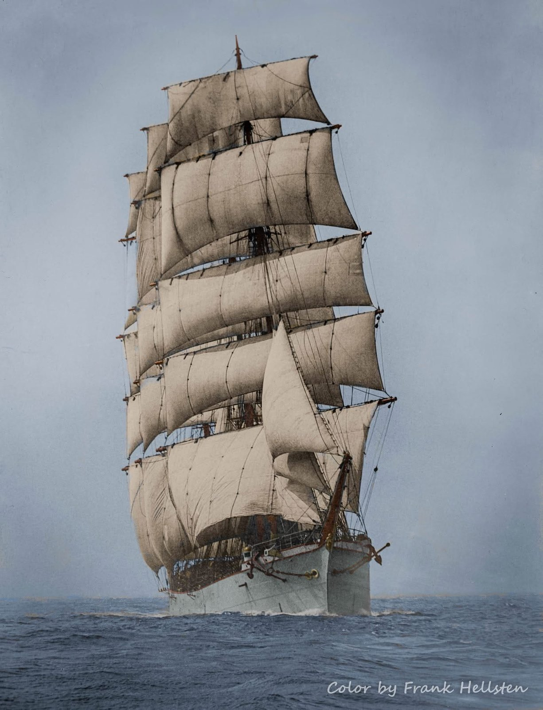
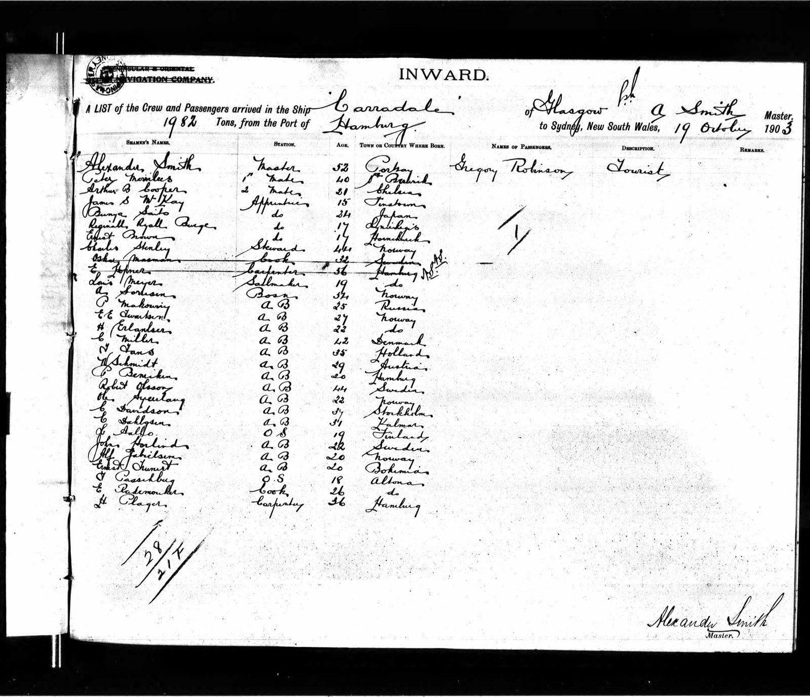

The Sailor and the Artist
An unexpected connection aboard the Carradale, 1903

The Carradale, four-masted barque. Original photograph by Allan C. Green, State Library Victoria. Colourisation by Frank Hellsten, reproduced with permission.
The Carradale, a four-masted sailing ship on which Peter Merrilees served as First Mate.
In October 1903, the four-masted sailing ship Carradale arrived in Sydney after a long voyage from Hamburg. Among those aboard were two men whose lives had brought them to sea for very different reasons.
One was my great-grandfather, Peter Merrilees, a professional seaman serving as First Mate. The other was Gregory Robinson, a marine artist travelling as a tourist.
More than a century later, I discovered their names together on the ship’s arrival record. It was an unexpected and rather wonderful find, linking a man whose life I had spent years researching with an artist whose surviving work offers a glimpse of the world he knew so well.
Two names on a crew list


Sydney arrival record for the Carradale, 19 October 1903. Alexander Smith is recorded as Master, Peter Merrilees as First Mate, and Gregory Robinson as a tourist.
Source: State Records NSW, Series 13278, Reel 2015, Sydney inward passenger and crew lists.
Select the image to enlarge it.
For me, this document is the heart of the discovery.
Peter’s name appears among the officers of the ship, immediately beneath the Master, Alexander Smith. Gregory Robinson appears separately, identified as a tourist.
Peter was there to work. As First Mate, he was second in command, responsible for much of the day-to-day running of the ship, supervising the crew, overseeing deck operations and standing his watches.
Robinson had come aboard with a very different purpose. He was an artist with a particular interest in sailing ships and the sea.
During the months it took to reach Australia, the two men shared the confined world of a working sailing ship, surrounded by the same sea and changing weather, although each would have experienced the voyage in his own way.
A voyage through an artist’s eyes
What makes this discovery especially interesting is that Gregory Robinson left behind drawings of the maritime world he travelled through.
In his account of Robinson’s work, Peter Vilhelm Nielsen describes two surviving sketchbooks, one associated with the Carradale’s 1903 voyage from Hamburg to Sydney. They contain 28 sketches, most depicting the sea and changing weather, with a smaller number showing ships.
These were subjects Robinson knew intimately as an artist: the movement of water, the appearance of the sky, the shapes of vessels and the ever-changing conditions of life at sea.
For Peter, those same conditions were part of his working day. The handling of a great square-rigged sailing ship required experience, judgement and constant attention to wind, weather, cargo and crew.
I had found plenty of official records documenting Peter’s seafaring career: his certificates, appointments, ships and voyages. What the records could never tell me was what he saw when he looked out across the ocean.
Robinson’s drawings offer something different. They bring us a little closer to the visual world of a voyage that Peter himself experienced.
Source: Nielsen, Peter Vilhelm (2013). “Gregory Robinson – En marinemaler” [Gregory Robinson – A Marine Painter]. Akvarellen, No. 4, 2013. Nordiska Akvarellsällskapet (Nordic Watercolour Society). English summary: https://akvarellen.org/english-summary-4-2013/
A remarkable coincidence
When I began researching Peter Merrilees, I never imagined that following his voyages would lead me to the work of a marine artist.
The crew list establishes that these two men sailed aboard the same ship, one as First Mate and the other as a tourist. Robinson’s surviving drawings add another dimension to that record, allowing us to approach the voyage through an artist’s eyes as well as through the official documents.
For a family historian, discoveries like this are particularly rewarding. A name on a century-old record becomes a connection to something unexpected, and another small part of an ancestor’s world comes into view.
The voyage in pictures
There is one more part of this discovery still to come.
The Royal Museums Greenwich holds Robinson’s original drawings from the Carradale voyage, and I have been in correspondence with the museum to arrange for five of them to be reproduced here.
When the images become available, I will add them to this page, offering us glimpses of that journey, the ship and the sea, as Robinson recorded them during the voyage he shared with Peter Merrilees.
I find it remarkable that, more than a century later, these drawings may allow us to see something of the world my great-grandfather knew so well.
Peter Merrilees’s wider story, from his early years in North Berwick to a lifetime spent aboard sailing ships, is told in Hameward Bend – A Family’s Journey Home.